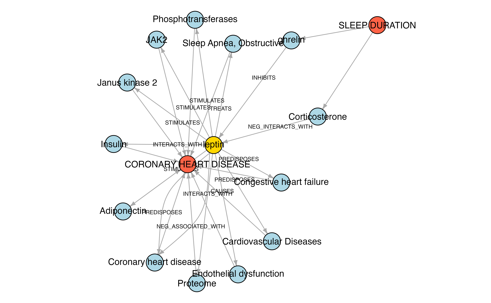

case-3-literature-triangulation.RmdThis RMarkdown document demonstrates how key elements from the notebook for case study 3 in the EpiGraphDB paper can be achieved using the R package. For detailed explanations of the case study please refer to the paper or the case study notebook.
The biomedical literature contains a wealth of information than far exceeds our capacity for systematic manual extraction. For this reason, there are many existing literature mining methods to extract the key concepts and content. Here we use data from SemMedDB, a well established database that provides subject-predicate-object triples from all PubMed titles and abstracts. Using a subset of this data we created MELODI-presto (https://melodi-presto.mrcieu.ac.uk/), a method to assign triples to any given biomedical query via a PubMed search and some basic enrichment, and have applied this systematically to traits represented in EpiGraphDB. This allows us to identify overlapping terms connecting any set of GWAS traits, e.g. exposure and disease outcome. From here we can attempt to triangulate causal estimates, and conversely, check the mechanisms identified from the literature against the causal evidence.
library("magrittr") library("dplyr") #> #> Attaching package: 'dplyr' #> The following objects are masked from 'package:stats': #> #> filter, lag #> The following objects are masked from 'package:base': #> #> intersect, setdiff, setequal, union library("purrr") #> #> Attaching package: 'purrr' #> The following object is masked from 'package:magrittr': #> #> set_names library("glue") #> #> Attaching package: 'glue' #> The following object is masked from 'package:dplyr': #> #> collapse library("igraph") #> #> Attaching package: 'igraph' #> The following objects are masked from 'package:purrr': #> #> compose, simplify #> The following objects are masked from 'package:dplyr': #> #> as_data_frame, groups, union #> The following objects are masked from 'package:stats': #> #> decompose, spectrum #> The following object is masked from 'package:base': #> #> union library("epigraphdb") #> EpiGraphDB v0.3 #> #> Web API: http://api.epigraphdb.org #> #> To turn off this message, use #> suppressPackageStartupMessages({library("epigraphdb")})
Here we set the starting trait, which we will use to explore associated disease traits.
STARTING_TRAIT <- "Sleep duration"
Given an exposure trait, find all traits with causal evidence. This method searches the causal evidence data for cases where our exposure trait has a potential casual effect on an outcome trait.
get_mr <- function(trait) { endpoint <- "/mr" params <- list( exposure_trait = trait, pval_threshold = 1e-10 ) mr_df <- query_epigraphdb(route = endpoint, params = params, mode = "table") mr_df } mr_df <- get_mr(STARTING_TRAIT) mr_df %>% glimpse() #> Rows: 29 #> Columns: 10 #> $ exposure.id <chr> "ieu-a-1088", "ieu-a-1088", "ieu-a-1088", "ieu-a-1088"… #> $ exposure.trait <chr> "Sleep duration", "Sleep duration", "Sleep duration", … #> $ outcome.id <chr> "ukb-a-460", "ieu-a-118", "ieu-a-115", "ieu-a-1073", "… #> $ outcome.trait <chr> "Vitamin and mineral supplements: Vitamin B", "Neuroti… #> $ mr.b <dbl> -0.0100669162, -0.1818909943, 2.3293509483, 0.25011813… #> $ mr.se <dbl> 0.0001310998, 0.0114868227, 0.1428329498, 0.0063949227… #> $ mr.pval <dbl> 0.000000e+00, 0.000000e+00, 0.000000e+00, 0.000000e+00… #> $ mr.method <chr> "FE IVW", "FE IVW", "FE IVW", "FE IVW", "FE IVW", "FE … #> $ mr.selection <chr> "DF", "DF", "DF", "DF", "DF", "DF", "DF", "HF", "DF", … #> $ mr.moescore <dbl> 1.00, 1.00, 1.00, 1.00, 1.00, 1.00, 1.00, 0.94, 1.00, …
For this example, we are interested in traits mapped to a disease node. To do this we utilise the mapping from GWAS trait to Disease via EFO term.
trait_to_disease <- function(trait) { endpoint <- "/ontology/gwas-efo-disease" params <- list(trait = trait) disease_df <- query_epigraphdb(route = endpoint, params = params, mode = "table") if (nrow(disease_df) > 0) { res <- disease_df %>% pull(`disease.label`) } else { res <- c() } res } disease_df <- mr_df %>% mutate(disease = map(`outcome.trait`, trait_to_disease)) %>% filter(map_lgl(`disease`, function(x) !is.null(x))) disease_df #> # A tibble: 5 x 11 #> exposure.id exposure.trait outcome.id outcome.trait mr.b mr.se mr.pval #> <chr> <chr> <chr> <chr> <dbl> <dbl> <dbl> #> 1 ieu-a-1088 Sleep duration ukb-a-107 Non-cancer i… -0.00257 2.53e-4 3.84e-24 #> 2 ieu-a-1088 Sleep duration ieu-a-6 Coronary hea… -1.04 1.10e-1 2.32e-21 #> 3 ieu-a-1088 Sleep duration ukb-a-548 Diagnoses - … -0.00671 8.64e-4 8.01e-15 #> 4 ieu-a-1088 Sleep duration ukb-a-54 Cancer code … -0.00191 2.47e-4 1.07e-14 #> 5 ukb-a-9 Sleep duration ukb-a-13 Sleeplessnes… -0.322 3.45e-2 1.10e-11 #> # … with 4 more variables: mr.method <chr>, mr.selection <chr>, #> # mr.moescore <dbl>, disease <list>
For the multiple exposure -> outcome relationships as reported from the table above, here we look at the literature evidence for one pair in detail:
The following looks for enriched triples of information (Subject-Predicate-Object) associated with our two traits. These have been derived via PubMed searches and corresponding SemMedDB data.
get_gwas_pair_literature <- function(gwas_id, assoc_gwas_id) { endpoint <- "/literature/gwas/pairwise" # NOTE in this example we blacklist to semmentic types params <- list( gwas_id = gwas_id, assoc_gwas_id = assoc_gwas_id, by_gwas_id = TRUE, pval_threshold = 1e-1, semmantic_types = "nusq", semmantic_types = "dsyn", blacklist = TRUE, limit = 1000 ) lit_df <- query_epigraphdb(route = endpoint, params = params, mode = "table") lit_df } GWAS_ID_X <- "ieu-a-1088" GWAS_ID_Y <- "ieu-a-6" lit_df <- get_gwas_pair_literature(GWAS_ID_X, GWAS_ID_Y) glimpse(lit_df) #> Rows: 839 #> Columns: 18 #> $ gwas.trait <chr> "Sleep duration", "Sleep duration", "Sleep duration"… #> $ gwas.id <chr> "ieu-a-1088", "ieu-a-1088", "ieu-a-1088", "ieu-a-108… #> $ gs1.localCount <int> 2, 2, 2, 2, 2, 2, 2, 2, 2, 2, 2, 2, 2, 2, 2, 2, 2, 2… #> $ gs1.pval <dbl> 7.851119e-06, 7.851119e-06, 7.851119e-06, 7.851119e-… #> $ s1.subject_name <chr> "Caffeine", "Caffeine", "Caffeine", "Caffeine", "Caf… #> $ s1.predicate <chr> "INTERACTS_WITH", "INTERACTS_WITH", "INTERACTS_WITH"… #> $ s1.id <chr> "Caffeine:INTERACTS_WITH:Melatonin", "Caffeine:INTER… #> $ s1.object_name <chr> "Melatonin", "Melatonin", "Melatonin", "Melatonin", … #> $ st.name <chr> "Melatonin", "Melatonin", "Melatonin", "Melatonin", … #> $ st.type <chr> "horm", "horm", "horm", "horm", "horm", "horm", "hor… #> $ s2.subject_name <chr> "Melatonin", "Melatonin", "Melatonin", "Melatonin", … #> $ s2.predicate <chr> "ASSOCIATED_WITH", "ASSOCIATED_WITH", "ASSOCIATED_WI… #> $ s2.id <chr> "Melatonin:ASSOCIATED_WITH:Acute coronary syndrome",… #> $ s2.object_name <chr> "Acute coronary syndrome", "Myocardial Infarction", … #> $ gs2.localCount <int> 3, 2, 3, 9, 2, 6, 4, 2, 2, 2, 3, 3, 2, 2, 2, 5, 2, 4… #> $ gs2.pval <dbl> 8.329046e-05, 1.094386e-02, 8.329046e-05, 3.435014e-… #> $ assoc_gwas.trait <chr> "Coronary heart disease", "Coronary heart disease", … #> $ assoc_gwas.id <chr> "ieu-a-6", "ieu-a-6", "ieu-a-6", "ieu-a-6", "ieu-a-6…
# Predicate counts for SemMed triples for trait X lit_df %>% count(`s1.predicate`) %>% arrange(desc(n)) #> # A tibble: 8 x 2 #> s1.predicate n #> <chr> <int> #> 1 INTERACTS_WITH 643 #> 2 INHIBITS 80 #> 3 NEG_INTERACTS_WITH 49 #> 4 STIMULATES 47 #> 5 higher_than 10 #> 6 COEXISTS_WITH 7 #> 7 NEG_INHIBITS 2 #> 8 CONVERTS_TO 1
# Predicate counts for SemMed triples for trait Y lit_df %>% count(`s2.predicate`) %>% arrange(desc(n)) #> # A tibble: 15 x 2 #> s2.predicate n #> <chr> <int> #> 1 CAUSES 154 #> 2 STIMULATES 132 #> 3 PREVENTS 123 #> 4 PREDISPOSES 107 #> 5 AFFECTS 95 #> 6 ASSOCIATED_WITH 50 #> 7 INTERACTS_WITH 50 #> 8 TREATS 31 #> 9 DISRUPTS 30 #> 10 INHIBITS 24 #> 11 COEXISTS_WITH 21 #> 12 NEG_PREVENTS 16 #> 13 higher_than 3 #> 14 AUGMENTS 2 #> 15 same_as 1
Sometimes it is preferable to filter the SemMedDB data, e.g. to remove less informative Predicates, such as COEXISTS_WITH and ASSOCIATED_WITH.
# Filter out some predicates that are not informative pred_filter <- c("COEXISTS_WITH", "ASSOCIATED_WITH") lit_df_filter <- lit_df %>% filter( !`s1.predicate` %in% pred_filter, !`s2.predicate` %in% pred_filter ) lit_df_filter %>% count(`s1.predicate`) %>% arrange(desc(n)) #> # A tibble: 6 x 2 #> s1.predicate n #> <chr> <int> #> 1 INTERACTS_WITH 608 #> 2 INHIBITS 68 #> 3 NEG_INTERACTS_WITH 48 #> 4 STIMULATES 28 #> 5 higher_than 9 #> 6 CONVERTS_TO 1
lit_df_filter %>% count(`s2.predicate`) %>% arrange(desc(n)) #> # A tibble: 13 x 2 #> s2.predicate n #> <chr> <int> #> 1 CAUSES 154 #> 2 STIMULATES 132 #> 3 PREVENTS 123 #> 4 PREDISPOSES 107 #> 5 AFFECTS 93 #> 6 INTERACTS_WITH 50 #> 7 DISRUPTS 30 #> 8 TREATS 27 #> 9 INHIBITS 24 #> 10 NEG_PREVENTS 16 #> 11 higher_than 3 #> 12 AUGMENTS 2 #> 13 same_as 1
If we explore the full table in lit_df_filter, we can see lots of links between the two traits, pinned on specific overlapping terms. For example:
Aspirin:INHIBITS:Oral anticoagulants from Sleep duration (s1) and anticoagulants:INHIBITS:P2RY12 from CHD (s2).
We can summarise the SemMedDB semantic type and number of overlapping terms:
lit_counts <- lit_df_filter %>% count(`st.type`, `st.name`) %>% arrange(`st.type`, desc(`n`)) lit_counts %>% print(n = 30) #> # A tibble: 21 x 3 #> st.type st.name n #> <chr> <chr> <int> #> 1 aapp Leptin 6 #> 2 aapp Somatotropin 5 #> 3 aapp Adrenergic Receptor 4 #> 4 aapp apolipoprotein E-4 2 #> 5 aapp Glutathione 2 #> 6 aapp Monoamine Oxidase 1 #> 7 gngm Cytochrome P450 10 #> 8 gngm Glycoproteins 2 #> 9 horm Melatonin 28 #> 10 horm Hormones 3 #> 11 orch Ethanol 672 #> 12 orch Oral anticoagulants 10 #> 13 orch Metoprolol 8 #> 14 orch Propofol 2 #> 15 orch Acetaldehyde 1 #> 16 orch Benzodiazepines 1 #> 17 orch gamma hydroxybutyrate 1 #> 18 orch Luteolin 1 #> 19 orch Morphine 1 #> 20 orch Neostigmine 1 #> 21 orch Thiopental 1
Note, the SemMedDB semantic types have been pre-filtered to only include a subset of possibilities.
Further examples of these term IDs and descriptions can be found here - https://mmtx.nlm.nih.gov/MMTx/semanticTypes.shtml
Here we look at cases where Leptin is the central overlapping term.
focus_term <- "Leptin" lit_detail <- lit_df_filter %>% filter(`st.name` == focus_term) lit_detail %>% head() #> # A tibble: 6 x 18 #> gwas.trait gwas.id gs1.localCount gs1.pval s1.subject_name s1.predicate s1.id #> <chr> <chr> <int> <dbl> <chr> <chr> <chr> #> 1 Sleep dur… ieu-a-… 5 1.77e-12 ghrelin INHIBITS ghre… #> 2 Sleep dur… ieu-a-… 5 1.77e-12 ghrelin INHIBITS ghre… #> 3 Sleep dur… ieu-a-… 5 1.77e-12 ghrelin INHIBITS ghre… #> 4 Sleep dur… ieu-a-… 5 1.77e-12 ghrelin INHIBITS ghre… #> 5 Sleep dur… ieu-a-… 5 1.77e-12 ghrelin INHIBITS ghre… #> 6 Sleep dur… ieu-a-… 5 1.77e-12 ghrelin INHIBITS ghre… #> # … with 11 more variables: s1.object_name <chr>, st.name <chr>, st.type <chr>, #> # s2.subject_name <chr>, s2.predicate <chr>, s2.id <chr>, #> # s2.object_name <chr>, gs2.localCount <int>, gs2.pval <dbl>, #> # assoc_gwas.trait <chr>, assoc_gwas.id <chr>
We can create a network diagram to visualise these relationships.
lit_detail <- lit_detail %>% mutate_at(vars(`gwas.trait`, `assoc_gwas.trait`), stringr::str_to_upper) nodes <- bind_rows( lit_detail %>% select(node = `gwas.trait`) %>% distinct() %>% mutate(color = "red"), lit_detail %>% select(node = `assoc_gwas.trait`) %>% distinct() %>% mutate(color = "red"), lit_detail %>% select(node = `s1.subject_name`) %>% distinct() %>% mutate(color = "skyblue"), lit_detail %>% select(node = `s2.subject_name`) %>% distinct() %>% mutate(color = "skyblue"), lit_detail %>% select(node = `s1.object_name`) %>% distinct() %>% mutate(color = "skyblue"), lit_detail %>% select(node = `s2.object_name`) %>% distinct() %>% mutate(color = "skyblue") ) %>% distinct() nodes #> # A tibble: 10 x 2 #> node color #> <chr> <chr> #> 1 SLEEP DURATION red #> 2 CORONARY HEART DISEASE red #> 3 ghrelin skyblue #> 4 Leptin skyblue #> 5 Coronary Arteriosclerosis skyblue #> 6 Coronary heart disease skyblue #> 7 Proteome skyblue #> 8 Sleep Apnea, Obstructive skyblue #> 9 Adiponectin skyblue #> 10 Insulin skyblue
edges <- bind_rows( # exposure -> s1 subject lit_detail %>% select(node = `gwas.trait`, assoc_node = `s1.subject_name`) %>% distinct(), # s2 object -> outcome lit_detail %>% select(node = `s2.object_name`, assoc_node = `assoc_gwas.trait`) %>% distinct(), # s1 subject - s1 predicate -> s1 object lit_detail %>% select( node = `s1.subject_name`, assoc_node = `s1.object_name`, label = `s1.predicate` ) %>% distinct(), # s2 subject - s2 predicate -> s2 object lit_detail %>% select( node = `s2.subject_name`, assoc_node = `s2.object_name`, label = `s2.predicate` ) %>% distinct() ) %>% distinct() %>% mutate(`label.cex` = 0.6) edges #> # A tibble: 14 x 4 #> node assoc_node label label.cex #> <chr> <chr> <chr> <dbl> #> 1 SLEEP DURATION ghrelin <NA> 0.6 #> 2 Coronary Arteriosclerosis CORONARY HEART DISEASE <NA> 0.6 #> 3 Coronary heart disease CORONARY HEART DISEASE <NA> 0.6 #> 4 Proteome CORONARY HEART DISEASE <NA> 0.6 #> 5 Sleep Apnea, Obstructive CORONARY HEART DISEASE <NA> 0.6 #> 6 Adiponectin CORONARY HEART DISEASE <NA> 0.6 #> 7 Insulin CORONARY HEART DISEASE <NA> 0.6 #> 8 ghrelin Leptin INHIBITS 0.6 #> 9 Leptin Coronary Arteriosclerosis TREATS 0.6 #> 10 Leptin Coronary heart disease PREDISPOSES 0.6 #> 11 Leptin Proteome INTERACTS_WITH 0.6 #> 12 Leptin Sleep Apnea, Obstructive TREATS 0.6 #> 13 Leptin Adiponectin STIMULATES 0.6 #> 14 Leptin Insulin INTERACTS_WITH 0.6
graph <- igraph::graph_from_data_frame(edges, directed = TRUE, vertices = nodes) graph$layout <- igraph::layout_with_kk graph #> IGRAPH fd1c27f DN-- 10 14 -- #> + attr: layout (g/x), name (v/c), color (v/c), label (e/c), label.cex #> | (e/n) #> + edges from fd1c27f (vertex names): #> [1] SLEEP DURATION ->ghrelin #> [2] Coronary Arteriosclerosis->CORONARY HEART DISEASE #> [3] Coronary heart disease ->CORONARY HEART DISEASE #> [4] Proteome ->CORONARY HEART DISEASE #> [5] Sleep Apnea, Obstructive ->CORONARY HEART DISEASE #> [6] Adiponectin ->CORONARY HEART DISEASE #> [7] Insulin ->CORONARY HEART DISEASE #> + ... omitted several edges
plot(graph)

We can check these proposed intermediates for causal evidence using MR results (from MR-Eve, Hemani et al 2017) in EpiGraphDB, e.g.
This can be achieved via two steps:
mr_check <- function(g1, g2) { endpoint <- "/mr" params <- list( exposure_trait = g1, outcome_trait = g2, pval_threshold = 1e-5 ) df <- query_epigraphdb(route = endpoint, params = params, mode = "table") df }
term_to_gwas <- function(term) { endpoint <- "/meta/nodes/Gwas/search" params <- list(name = term) df <- query_epigraphdb(route = endpoint, params = params, mode = "table") df }
compare_two_gwas_lists <- function(gwas_list_1, gwas_list_2) { for (i in gwas_list_1) { for (j in gwas_list_2) { cat("Exposure: ", i, "\nOutcome: ", j, "\n") mr_df <- mr_check(i, j) if (nrow(mr_df) == 0) { cat("No MR data\n") } else { print(mr_df) } } } }
# get the literature data from earlier s1_subjects <- lit_detail %>% pull(`s1.subject_name`) %>% unique() s1_objects <- lit_detail %>% pull(`s1.object_name`) %>% unique() s2_subjects <- lit_detail %>% pull(`s2.subject_name`) %>% unique() s2_objects <- lit_detail %>% pull(`s2.object_name`) %>% unique() # compare the original trait to s1 for (i in s1_subjects) { cat(paste("\n### EXPOSURE", STARTING_TRAIT, i, "###\n")) i_gwas <- term_to_gwas(i) if (nrow(i_gwas) > 0) { compare_two_gwas_lists( STARTING_TRAIT, i_gwas %>% pull(`node.trait`) %>% unique() ) } else { print("No matching GWAS") } } #> #> ### EXPOSURE Sleep duration ghrelin ### #> [1] "No matching GWAS" # compare the s1 data for (i in s1_subjects) { i_gwas <- term_to_gwas(i) for (j in s1_objects) { j_gwas <- term_to_gwas(j) cat(paste("\n### S1", i, j, "###\n")) if (nrow(i_gwas) > 0 && nrow(j_gwas) > 0) { compare_two_gwas_lists( i_gwas %>% pull(`node.trait`) %>% unique(), j_gwas %>% pull(`node.trait`) %>% unique() ) } else { cat("\nNo matching GWAS\n") } } } #> #> ### S1 ghrelin Leptin ### #> #> No matching GWAS # compare the s2 data for (i in s2_subjects) { i_gwas <- term_to_gwas(i) for (j in s2_objects) { j_gwas <- term_to_gwas(j) cat(paste("\n### S2", i, j, "###\n")) if (nrow(i_gwas) > 0 && nrow(j_gwas) > 0) { compare_two_gwas_lists( i_gwas %>% pull(`node.trait`) %>% unique(), j_gwas %>% pull(`node.trait`) %>% unique() ) } else { cat("\nNo matching GWAS\n") } } } #> #> ### S2 Leptin Coronary Arteriosclerosis ### #> #> No matching GWAS #> #> ### S2 Leptin Coronary heart disease ### #> Exposure: Leptin #> Outcome: Coronary heart disease #> No MR data #> Exposure: Leptin #> Outcome: Major coronary heart disease event #> No MR data #> Exposure: Leptin #> Outcome: Major coronary heart disease event excluding revascularizations #> No MR data #> Exposure: Leptin receptor #> Outcome: Coronary heart disease #> No MR data #> Exposure: Leptin receptor #> Outcome: Major coronary heart disease event #> No MR data #> Exposure: Leptin receptor #> Outcome: Major coronary heart disease event excluding revascularizations #> No MR data #> Exposure: circulating leptin levels #> Outcome: Coronary heart disease #> No MR data #> Exposure: circulating leptin levels #> Outcome: Major coronary heart disease event #> No MR data #> Exposure: circulating leptin levels #> Outcome: Major coronary heart disease event excluding revascularizations #> No MR data #> Exposure: circulating leptin levels adjusted for BMI #> Outcome: Coronary heart disease #> No MR data #> Exposure: circulating leptin levels adjusted for BMI #> Outcome: Major coronary heart disease event #> No MR data #> Exposure: circulating leptin levels adjusted for BMI #> Outcome: Major coronary heart disease event excluding revascularizations #> No MR data #> Exposure: leptin #> Outcome: Coronary heart disease #> No MR data #> Exposure: leptin #> Outcome: Major coronary heart disease event #> No MR data #> Exposure: leptin #> Outcome: Major coronary heart disease event excluding revascularizations #> No MR data #> #> ### S2 Leptin Proteome ### #> #> No matching GWAS #> #> ### S2 Leptin Sleep Apnea, Obstructive ### #> #> No matching GWAS #> #> ### S2 Leptin Adiponectin ### #> Exposure: Leptin #> Outcome: Adiponectin #> No MR data #> Exposure: Leptin receptor #> Outcome: Adiponectin #> No MR data #> Exposure: circulating leptin levels #> Outcome: Adiponectin #> No MR data #> Exposure: circulating leptin levels adjusted for BMI #> Outcome: Adiponectin #> No MR data #> Exposure: leptin #> Outcome: Adiponectin #> No MR data #> #> ### S2 Leptin Insulin ### #> Exposure: Leptin #> Outcome: Acute insulin response #> No MR data #> Exposure: Leptin #> Outcome: Area under the curve of insulin levels #> No MR data #> Exposure: Leptin #> Outcome: Corrected insulin response #> No MR data #> Exposure: Leptin #> Outcome: Corrected insulin response adjusted for insulin sensitivity index #> No MR data #> Exposure: Leptin #> Outcome: Early placenta insulin-like peptide #> No MR data #> Exposure: Leptin #> Outcome: Fasting blood insulin #> No MR data #> Exposure: Leptin #> Outcome: Fasting insulin #> No MR data #> Exposure: Leptin receptor #> Outcome: Acute insulin response #> No MR data #> Exposure: Leptin receptor #> Outcome: Area under the curve of insulin levels #> No MR data #> Exposure: Leptin receptor #> Outcome: Corrected insulin response #> No MR data #> Exposure: Leptin receptor #> Outcome: Corrected insulin response adjusted for insulin sensitivity index #> No MR data #> Exposure: Leptin receptor #> Outcome: Early placenta insulin-like peptide #> No MR data #> Exposure: Leptin receptor #> Outcome: Fasting blood insulin #> No MR data #> Exposure: Leptin receptor #> Outcome: Fasting insulin #> No MR data #> Exposure: circulating leptin levels #> Outcome: Acute insulin response #> No MR data #> Exposure: circulating leptin levels #> Outcome: Area under the curve of insulin levels #> No MR data #> Exposure: circulating leptin levels #> Outcome: Corrected insulin response #> No MR data #> Exposure: circulating leptin levels #> Outcome: Corrected insulin response adjusted for insulin sensitivity index #> No MR data #> Exposure: circulating leptin levels #> Outcome: Early placenta insulin-like peptide #> No MR data #> Exposure: circulating leptin levels #> Outcome: Fasting blood insulin #> No MR data #> Exposure: circulating leptin levels #> Outcome: Fasting insulin #> No MR data #> Exposure: circulating leptin levels adjusted for BMI #> Outcome: Acute insulin response #> No MR data #> Exposure: circulating leptin levels adjusted for BMI #> Outcome: Area under the curve of insulin levels #> No MR data #> Exposure: circulating leptin levels adjusted for BMI #> Outcome: Corrected insulin response #> No MR data #> Exposure: circulating leptin levels adjusted for BMI #> Outcome: Corrected insulin response adjusted for insulin sensitivity index #> No MR data #> Exposure: circulating leptin levels adjusted for BMI #> Outcome: Early placenta insulin-like peptide #> No MR data #> Exposure: circulating leptin levels adjusted for BMI #> Outcome: Fasting blood insulin #> No MR data #> Exposure: circulating leptin levels adjusted for BMI #> Outcome: Fasting insulin #> No MR data #> Exposure: leptin #> Outcome: Acute insulin response #> No MR data #> Exposure: leptin #> Outcome: Area under the curve of insulin levels #> No MR data #> Exposure: leptin #> Outcome: Corrected insulin response #> No MR data #> Exposure: leptin #> Outcome: Corrected insulin response adjusted for insulin sensitivity index #> No MR data #> Exposure: leptin #> Outcome: Early placenta insulin-like peptide #> No MR data #> Exposure: leptin #> Outcome: Fasting blood insulin #> No MR data #> Exposure: leptin #> Outcome: Fasting insulin #> No MR data # compare the s2 to disease for (i in s2_subjects) { cat(paste("\n### DISEASE", i, "Coronary heart disease", "###\n")) i_gwas <- term_to_gwas(i) if (nrow(i_gwas) > 0) { compare_two_gwas_lists( i_gwas %>% pull(`node.trait`) %>% unique(), "Coronary heart disease" ) } else { print("No matching GWAS") } } #> #> ### DISEASE Leptin Coronary heart disease ### #> Exposure: Leptin #> Outcome: Coronary heart disease #> No MR data #> Exposure: Leptin receptor #> Outcome: Coronary heart disease #> No MR data #> Exposure: circulating leptin levels #> Outcome: Coronary heart disease #> No MR data #> Exposure: circulating leptin levels adjusted for BMI #> Outcome: Coronary heart disease #> No MR data #> Exposure: leptin #> Outcome: Coronary heart disease #> No MR data
We can refer back to the articles to check the text that was used to derive the SemMedDB data. This is important due to the imperfect nature of the SemRep annotation process (https://semrep.nlm.nih.gov/).
get_literature <- function(gwas_id, semmed_triple_id) { endpoint <- "/literature/gwas" params <- list( gwas_id = gwas_id, semmed_triple_id = semmed_triple_id, by_gwas_id = TRUE, pval_threshold = 1e-1 ) df <- query_epigraphdb(route = endpoint, params = params, mode = "table") df %>% select(`triple.id`, `lit.pubmed_id`) } pub_df <- bind_rows( lit_detail %>% select(gwas_id = `gwas.id`, semmed_triple_id = `s1.id`) %>% distinct(), lit_detail %>% select(gwas_id = `assoc_gwas.id`, semmed_triple_id = `s2.id`) %>% distinct() ) %>% transpose() %>% map_df(function(x) get_literature(x$gwas_id, x$semmed_triple_id)) pub_df #> # A tibble: 15 x 2 #> triple.id lit.pubmed_id #> <chr> <chr> #> 1 ghrelin:INHIBITS:Leptin 21659802 #> 2 ghrelin:INHIBITS:Leptin 22473743 #> 3 ghrelin:INHIBITS:Leptin 19955752 #> 4 ghrelin:INHIBITS:Leptin 18719052 #> 5 ghrelin:INHIBITS:Leptin 30364557 #> 6 Leptin:TREATS:Coronary Arteriosclerosis 26769430 #> 7 Leptin:TREATS:Coronary Arteriosclerosis 20691218 #> 8 Leptin:PREDISPOSES:Coronary heart disease 18723235 #> 9 Leptin:PREDISPOSES:Coronary heart disease 22412070 #> 10 Leptin:INTERACTS_WITH:Proteome 26975316 #> 11 Leptin:TREATS:Sleep Apnea, Obstructive 10449691 #> 12 Leptin:STIMULATES:Adiponectin 17403719 #> 13 Leptin:STIMULATES:Adiponectin 21481397 #> 14 Leptin:INTERACTS_WITH:Insulin 12724058 #> 15 Leptin:INTERACTS_WITH:Insulin 15648007
sessionInfo
sessionInfo() #> R version 4.0.0 (2020-04-24) #> Platform: x86_64-pc-linux-gnu (64-bit) #> Running under: Ubuntu 16.04.6 LTS #> #> Matrix products: default #> BLAS: /home/travis/R-bin/lib/R/lib/libRblas.so #> LAPACK: /home/travis/R-bin/lib/R/lib/libRlapack.so #> #> locale: #> [1] LC_CTYPE=en_US.UTF-8 LC_NUMERIC=C #> [3] LC_TIME=en_US.UTF-8 LC_COLLATE=en_US.UTF-8 #> [5] LC_MONETARY=en_US.UTF-8 LC_MESSAGES=en_US.UTF-8 #> [7] LC_PAPER=en_US.UTF-8 LC_NAME=C #> [9] LC_ADDRESS=C LC_TELEPHONE=C #> [11] LC_MEASUREMENT=en_US.UTF-8 LC_IDENTIFICATION=C #> #> attached base packages: #> [1] stats graphics grDevices utils datasets methods base #> #> other attached packages: #> [1] epigraphdb_0.2 igraph_1.2.5 glue_1.4.1 purrr_0.3.4 dplyr_1.0.0 #> [6] magrittr_1.5 #> #> loaded via a namespace (and not attached): #> [1] Rcpp_1.0.4.6 knitr_1.28 MASS_7.3-51.5 tidyselect_1.1.0 #> [5] R6_2.4.1 rlang_0.4.6 fansi_0.4.1 httr_1.4.1 #> [9] stringr_1.4.0 tools_4.0.0 xfun_0.14 utf8_1.1.4 #> [13] cli_2.0.2 ellipsis_0.3.1 htmltools_0.4.0 yaml_2.2.1 #> [17] assertthat_0.2.1 digest_0.6.25 rprojroot_1.3-2 tibble_3.0.1 #> [21] lifecycle_0.2.0 pkgdown_1.5.1.9000 crayon_1.3.4 vctrs_0.3.0 #> [25] fs_1.4.1 curl_4.3 memoise_1.1.0 evaluate_0.14 #> [29] rmarkdown_2.2 stringi_1.4.6 pillar_1.4.4 compiler_4.0.0 #> [33] desc_1.2.0 generics_0.0.2 backports_1.1.7 jsonlite_1.6.1 #> [37] pkgconfig_2.0.3